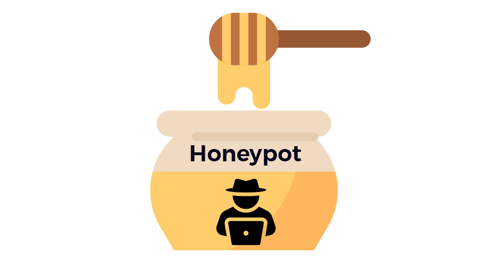
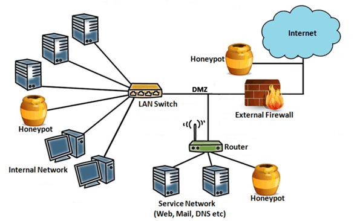

HoneyPot
Honeypot

Que és?
Un honeypot és un sistema o aplicació informàtica configurada per simular vulnerabilitats i comportaments atractius per als atacants, amb l'objectiu de detectar, estudiar i aprendre dels seus intents d'intrusió. És com una trampa que imita un sistema real però que, en realitat, està controlat i monitoritzat per detectar possibles activitats malicioses.
Objectius principals d'un honeypot:
-
Detectar atacs: Com que els honeypots són configurats per semblar vulnerables, poden detectar intents d'atac que altres sistemes de seguretat, com els tallafocs, podrien passar per alt.
-
Observar tècniques d'atac: Un honeypot permet monitoritzar i estudiar el comportament dels atacants, com ara les eines i tècniques que utilitzen per accedir al sistema.
-
Distraure els atacants: Un honeypot pot actuar com a esquer, desviant l'atenció dels atacants cap a ell i protegint els sistemes reals mentre aquests perden temps intentant accedir al sistema fals.
-
Millorar la seguretat: Amb la informació obtinguda dels atacs, es poden millorar les defenses del sistema real ajustant les polítiques de seguretat o tancant possibles vulnerabilitats.
Tipus de honeypots:
-
Honeypots de producció: Utilitzats en entorns reals per detectar i alertar d'atacs en curs. Sovint, aquests honeypots s'utilitzen com a sistema de detecció de intrusions per protegir els entorns de producció.
-
Honeypots d'investigació: S'utilitzen principalment per recollir informació sobre tècniques d'atac i comportament dels atacants. Aquests es poden utilitzar en laboratoris de seguretat per estudiar malware o altres amenaces.
Com funciona un honeypot:
-
Simulació de vulnerabilitats: El sistema actua com si tingués vulnerabilitats reals. Això pot incloure serveis no segurs, ports oberts o configuracions poc segures que conviden als atacants a interactuar amb el sistema.
-
Monitorització i registres: Els honeypots estan dissenyats per monitoritzar i enregistrar cada acció que realitza un possible atacant. Aquesta informació es pot utilitzar per entendre millor com operen i quines tècniques utilitzen per explotar sistemes.
-
No interfereix en sistemes reals: Com que un honeypot no s'utilitza per a finalitats productives reals, qualsevol interacció amb ell es pot considerar sospitosa i s'ha de tractar com un intent d'intrusió.

Avantatges d'un honeypot:
- Alta precisió: Qualsevol acció en un honeypot és probable que sigui maliciosa, reduint falsos positius.
- Recollida d'informació detallada: Ofereix informació detallada sobre els atacs i les tècniques que utilitzen els atacants.
- Impacte mínim en el rendiment del sistema real: Ja que no afecta els sistemes productius.
Limitacions d'un honeypot:
- Cobertura limitada: Només atrau atacs dirigits cap a ell, no protegeix directament altres parts de la xarxa.
- Exposició: Si un atacant experimentat descobreix que està interactuant amb un honeypot, pot evitar-lo o intentar sabotejar-lo.
Pràctica: Configuració d'un Honeypot en Linux
Un honeypot és una eina utilitzada per atraure atacants simulant un sistema vulnerable. Els administradors de sistemes poden utilitzar un honeypot per estudiar el comportament dels atacants i millorar la seguretat del sistema. Aquesta pràctica se centra en la configuració d'un honeypot senzill en Linux utilitzant Cowrie, una solució popular per a SSH.
Objectiu:
Aprendre a configurar un honeypot en un sistema Linux mitjançant Cowrie per monitoritzar intents d'accés SSH no autoritzats.
Requisits previs:
- Un servidor Linux amb accés root (preferiblement una màquina virtual o entorn de proves).
- Accés a internet per descarregar Cowrie i les dependències.
Passos per a la configuració del honeypot amb Cowrie:
1. Instal·lar les dependències
Abans d'instal·lar Cowrie, cal assegurar-se que tenim Python 3 i altres dependències instal·lades:
| Bash | |
|---|---|
2. Clonar el repositori de Cowrie
Clonarem el repositori de Cowrie des de GitHub a la nostra màquina:
3. Configurar l'entorn virtual de Python
Un cop dins del directori de Cowrie, configurarem un entorn virtual de Python per mantenir les dependències aïllades:
4. Instal·lar les dependències de Cowrie
Amb l'entorn virtual activat, instal·larem les dependències de Cowrie utilitzant pip:
5. Configurar Cowrie
Cowrie ve amb un fitxer de configuració d'exemple que hem de copiar i ajustar si cal:
Pots editar el fitxer cowrie.cfg amb un editor de text com nano si vols ajustar opcions, com ara el port SSH fals o altres paràmetres. Per defecte, Cowrie escolta al port 2222 en lloc del 22, per evitar conflictes amb el servei SSH real.
6. Executar Cowrie
Ara, pots llançar Cowrie perquè comenci a funcionar com a honeypot:
Per veure els logs en temps real i seguir l'activitat, pots utilitzar:
| Bash | |
|---|---|
7. Redirigir el port SSH real al port del honeypot
Per assegurar-te que els atacants es connectin al honeypot, pots redirigir el tràfic del port SSH real (22) al port 2222 on Cowrie està escoltant. Això ho pots fer amb iptables:
| Bash | |
|---|---|
Això farà que qualsevol intent d'accés al port 22 es redirigeixi automàticament al honeypot.